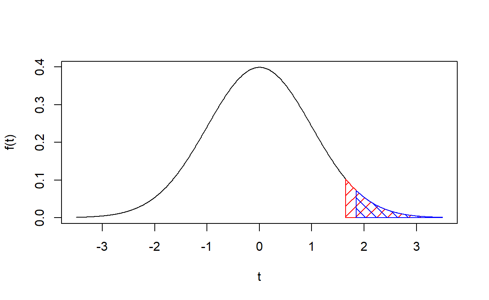
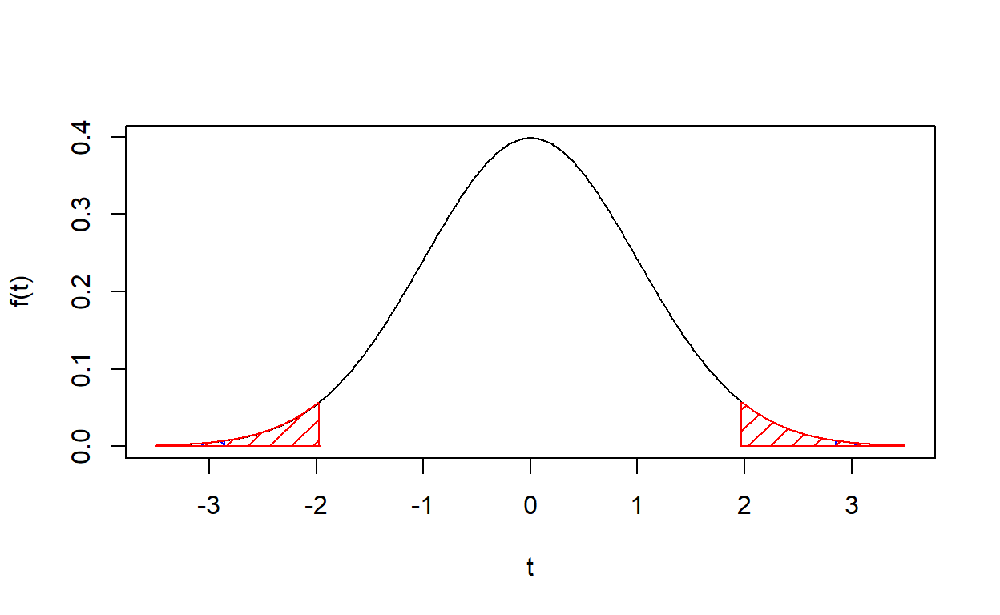

Sampling Distribution of \(\hat\beta\)
BLUE to BUE
\[ y = \beta_0 + \beta_1x_1 + \beta_2x_2 + ... + \beta_kx_k + u \]
Assumptions of Gauss-Markov
- Linear in the parameters
- Random Sampling
- Zero conditional mean of errors
- Homoskedasticity
- No Perfect Multicollinearity
- Large Outliers are Unlikely
Under these assumptions, OLS is BLUE - minimum variance among all
linear unbiased estimators
Assumptions of the Classical Linear Model
- Linear in the parameters
- Random Sampling
- Zero conditional mean of errors
- Homoskedasticity
- No Perfect Multicollinearity
- Large Outliers are Unlikely
- \(E(y|X) \sim N(X\beta, \sigma^2)\)
Under these assumptions, OLS is not only BLUE but BUE - best among all unbiased estimators, not just linear ones.
Distribution of \(\hat\beta\)
Under the assumptions of the CLM,
\[ \hat\beta_j \sim N(\beta_j, Var(\hat\beta_j)) \]
When \(\sigma^2\) is known,
\[ \hat\beta_j/\sigma_{\hat\beta_j} \sim N(0,1)\]
When \(\sigma^2\) is unknown,
\[ \hat\beta_j/s_{\hat\beta_j} \sim t_{n-k-1} = t_{df} \]
Hypothesis Testing
Steps
- State the Null & Alternative Hypotheses
- Determine the Significance Level (\(\alpha\))
- Estimate the parameter(s) and the test statistic(s)
- Calculate the critical value or p-value
- Make a Rejection Decision
Types of Null/Alternative Hypotheses
- One-Sided Alternatives
- Left-Tailed Alternative \[ H_0: \beta \ge 0 \] \[ H_1: \beta < 0 \]
- Right-Tailed Alternative \[ H_0: \beta \le 0 \] \[ H_1: \beta > 0 \]
- Two-Sided \[ H_0: \beta = 0 \] \[ H_1: \beta \ne 0 \]
Determining \(\alpha\)
Type I and Type II Errors
| Null Hypothesis: | |||
|---|---|---|---|
| True | False | ||
| Data Conclusion: | Accept \(H_0\) | No Error | Type II Error |
| Reject \(H_0\) | Type I Error | No Error |
Significance (\(\alpha\)) measures the probability of observing data different from \(H_0\) when \(H_0\) is true.
\[\alpha = P[\hat{T}> T_c| H_0] = P[\text{Type I Error}]\]
Significance and Power
Power (\(B\)) measures the probability of observing data different from \(H_0\) when \(H_1\) is true.
\[B = P[\hat{T} > T_c | H_1] = 1 - P[\text{Type II Error}] = 1 - F(T_c - \frac{\beta_{H_1}}{s_{\hat\beta}}) \]
For a given magnitude of difference between \(\beta_{H_0}\) and \(\beta_{H_1}\) and a given sample size, there is a trade-off between achieving a lower significance level and achieving a higher power.
Survey designs typically determine their minimum sample size by calculating the number of observations required to detect a predetermined minimum effect size to be considered “important” at a predetermined highest-acceptable significance level (usually 0.05) at a predetermined lowest-acceptable power (often 0.8)
Does Experience Increase Wages?
Using wage1, regress wage on
exper, controlling for educ and
tenure. Call the output wage.lm6 and print a
summary() of the results.
# In the solution, `exper` is the first variable since it's common to put variables of interest in the first position. wage1 <- wooldridge::wage1
wage.lm6 <- lm(wage ~ exper + educ + tenure, data = wage1)
summary(wage.lm6)Critical Values and p-Values
\[ H_0: \beta = 0 \] \[ H_1: \beta > 0 \]
Critical Values and p-Values in R
The following code calculates and graphs the rejection region (red), and p-value region for a one-tailed test (\(P[t > \hat{\beta}_j/\hat{\sigma}_{\hat{\beta}_j}]\)).
wage1 <- wooldridge::wage1
wage.lm6 <- lm(wage ~ exper + educ + tenure, data = wage1)
# Define values for x and y axes, and the critical and test values.
x <- seq(-3.5, 3.5, length = 1000)
y <- dt(x, wage.lm6$df.residual)
t.critval <- qt(0.95, wage.lm6$df.residual)
t.testval <- summary(wage.lm6)$coefficients['exper', 't value']
# Plot the t distribution with n-k-1 degrees of freedom and sensibly-labeled axes.
plot(x,
y,
type = "l",
ylab = "f(t)",
xlab = "t")
# Add the polygon for the right-tailed, alpha = 0.05 t-critical value.
polygon(c(x[x >= t.critval], max(x), t.critval),
c(y[x >= t.critval], 0, 0),
col = "red",
density = 10)
# Add the polygon for the p-value.
polygon(
c(x[x >= t.testval], max(x), t.testval),
c(y[x >= t.testval], 0, 0),
col = "blue",
density = 10,
angle = -45
)
Do Sales Revenues Affect CEO Salaries?
- Using
ceosal1, regress the log ofsalaryon log ofsales, controlling forroeand firm industry group (industry, finance, consumer product, or utility) - Look out for perfect multicollinearity and leave on group - industry - out!).
- Print a
summary()of the results.
# Are you really just going to click this and copy the solution?
# Give this part a try for yourself first!ceosal1 <- wooldridge::ceosal1
salary.lm1 <- lm(salary ~ log(sales) + roe + finance + consprod + utility, data = ceosal1)
summary(salary.lm1)Critical Values and p-Values
Critical Values and P-Values in R
The following code calculates and graphs the rejection region (red), and p-value region for the two-tailed test above (\(P[t > |\hat{\beta}_j/\hat{\sigma}_{\hat{\beta}_j}|] + P[t < -|\hat{\beta}_j/\hat{\sigma}_{\hat{\beta}_j}|]\)).
ceosal1 <- wooldridge::ceosal1
salary.lm1 <- lm(salary ~ log(sales) + roe + finance + consprod + utility, data = ceosal1)
# Define values for x and y axes, and the critical and test values.
x <- seq(-3.5,3.5,length=1000)
y <- dt(x,salary.lm1$df.residual)
t.critval <- qt(0.025, salary.lm1$df.residual)
t.testval <- summary(salary.lm1)$coefficients['log(sales)', 't value']
# Plot the t distribution with n-k-1 degrees of freedom and sensibly-labeled axes.
plot(x, y, type="l", ylab = "f(t)", xlab = "t")
# Add the polygons for the p-value.
polygon(c(x[x>=abs(t.testval)], max(x), abs(t.testval)), c(y[x>=abs(t.testval)], 0, 0), col="blue", density = 10, angle = -45)
polygon(c(min(x), x[x<=-abs(t.testval)], -abs(t.testval)), c(y[x<=-abs(t.testval)], 0, 0), col="blue", density = 10, angle = -45)
# Add the polygons for BOTH alpha = 0.05 t-critical values.
polygon(c(x[x>=-t.critval], max(x), -t.critval), c(y[x>=-t.critval], 0, 0), col="red", density = 10)
polygon(c(min(x), x[x<=t.critval], t.critval), c(y[x<=t.critval], 0, 0), col="red", density = 10)
Confidence Intervals
The 95% confidence interval for \(\hat\beta_j\) solves
\[ P(\hat{\beta_j}-t_{0.025}^c \cdot s_{\hat{\beta_j}} \le \mu \le \hat{\beta_j}+t_{0.025}^c \cdot s_{\hat{\beta_j}}) = 0.95 \]
Confidence Intervals
- Using the
wage1data, regress wage on education, experience, experience squared, tenure, and occupation (profesional services, professional occupations, clerical occupations, and service occupations). - Calculate 99-percent confidence intervals for the coefficients with
the
confint()function.
# Getting r to show some functions can be tricky, and polynomials are among them.
# To operate an numerical exponent on a variable in your formula, you need to apply the I(...)operator.
# The default confidence level is 0.95; for other confidence levels, adjust the "level" option.wage.lm7 <- lm(wage ~ educ + exper + I(exper^2) + tenure + clerocc + servocc, data = wage1)
confint(wage.lm7, level = 0.99)